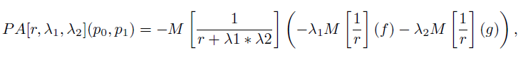

Piecewise linear quadratic (plq), generalized proximal average
pa = plq_gpa(p0, p1, lambda, r)
matrices. PLQ functions.
constant in [0,1]. lambda1 = 1 - lambda. lambda2 = lambda.
positive constant. Parameter to the Moreau envelope.
matrix. The non-convex proximal average of two PLQ functions computed via formula given below
Computes the nonconvex proximal average of two (potentially nonconvex) PLQ functions p0 and p1, via the formula

where M[k] is the Moreau envelope with smoothing parameter k.
This algorithm runs in O(n + m) time, where n and m are the number of pieces in p0 and p1, respectively.
p0 = [0,0,0.5,-1; inf,0,-0.5,-1]; p1 = [inf,0.25,0,0]; pa = plq_gpa(p0,p1,0.5,1), plq_plotMultiple(-5, 5, p0, p1, pa); |
Bryan Gardiner, University of British Columbia, BC, Canada